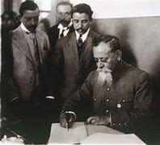

es un trabajo de investigacion de temas diversos de historia
Cada cutura tiene constumbres,un ejemplo son algunas culturas de mexico que celebran el dia de muertos,el dia de la candelaria,entre otros dias que se hacen llamar constumbres. DESPUES DE LA REVOLUCION VENUSTIANO CARRANZA CONVOCO UN CONGRESO EN QUERETARO CON EL PROPOSITO DE HACER UNA NUEVA CONSTITUCION. SE LE LLAMO LA CONSTITUCION DE 1917 A LA QUE TERMINO CON LA REVOLUCION MEXICANA Y ES ACTUALMENTE.ESTA CONSTITUCION SE CREO EL 5 DE FEBRERO DE 1917. LOS PRINCIPALES articulos son

impulso ala economia Durante este periodo la meta de los gobiernos de mexico fue resolver problemas de su crecimiento economico heredados en el pasado en el campo los habitantes vivian con desigualdad: no tenian empleos y sus tierras habian sido inproductivas o se los habian robado. En las ciudades tampoco habia empleo y los derechos de los trabajadores no eran respetados la gran mayoria de los inversionistas nacionales y extranjeros explotaban recursos naturales con privilegios que prometian su eriquecimiento. Estas desigualdades se hacian cada vez peor por que mexico no tenia suficiente caminos, carreteras,medios de comunicacion, presas,electrificacion de sus poblados,agua,servicios medicos y oros servicios.
revolucion MEXICANA
la revolucion mexicana fue un conflicto armado entre los abitantes de mexico,este conflicto duro desde el 20 de noviembre de 1910 hasta el 5 de febrero de 1917. la revolucion mexicana inicio porque huvo varias personas que ya no querian que porfirio diaz sea presidente.Entre las personas que ya no querian que porfirio diaz sea presidente estaba fransisco i. madero,que fue el sucedor de porfirio diaz . Los principales personajes de la revolucion mexicana fueron fransisco i. madero,pascual orozco,pancho villa,emiliano zapata y venustiano carranza . En la revolucion mexicana ocurrio un acontecimiento muy malo para todo mexico que se llamo la decena tragica.en este acontecimiento murieron muchas personas en las batallas,inclullendo a madero y a jose maria pino suarez que fueron asesinados por el genral victoriano huerta. La revolucion mexicana termino gracias a la constitucion de 1917.
CIUDAD Y CAMPO Actualmente en Mexico hay personas que viven en el campo pero tambien hay personas que viven en la ciudad. Vida en el campo: la vida en el campo en mas tranquila y sencilla que en la ciudad.las personas que viven en el campo disfrutan de la naturaleza,del aire y de los frutos. Normalmente las personas que viven en el campo se dedica a la agricultura o a la ganaderia. La vida en la ciudad: brinda beneficios como opurtunidades laborales y acceso a multiples servicios,pero tambien condiciona a seguir el ritmo acelerado para cumplir con extensas jornadas de trabajo y la compentencia que se genera ante la gran demanda de trabajo.
Hay distintas culturas en el mundo pero estas culturas se caracterizan por algo ya sea por el idioma,religion,forma de vestir,entre otras muchas caracteristicas. tambien otras caracteristicas pueden ser la forma de vivir,el lugar donde se vive,la forma de enseñar,etc. Cada cutura tiene constumbres,un ejemplo son algunas culturas de mexico que celebran el dia de muertos,el dia de la candelaria,entre otros dias que se hacen llamar constumbres. HAY GENTE QUE S VA DE SU LUGAR DE ORIGEN EN BUSCA DE UNAMEJOR VIDA Y POR ESO ERMIGRAN.